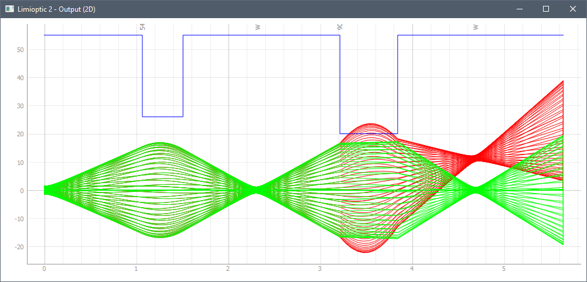
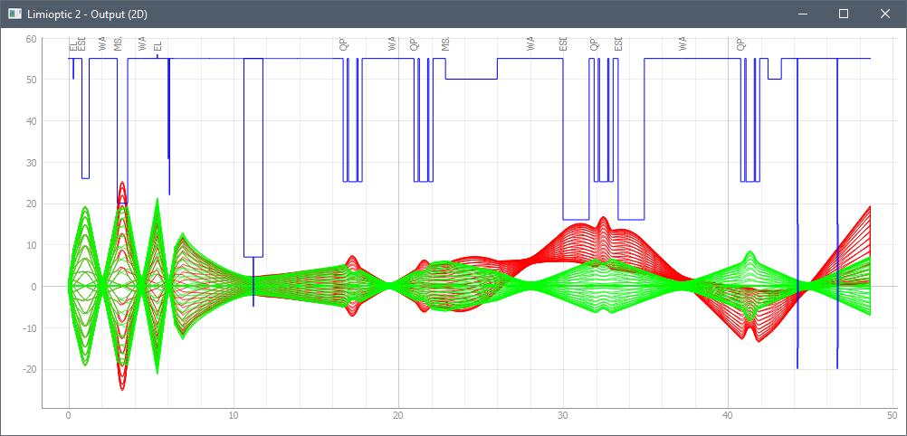
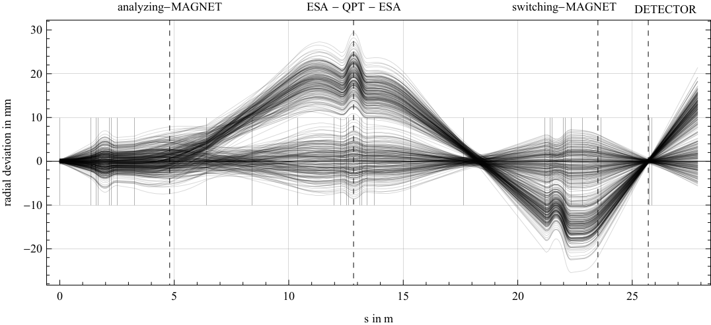
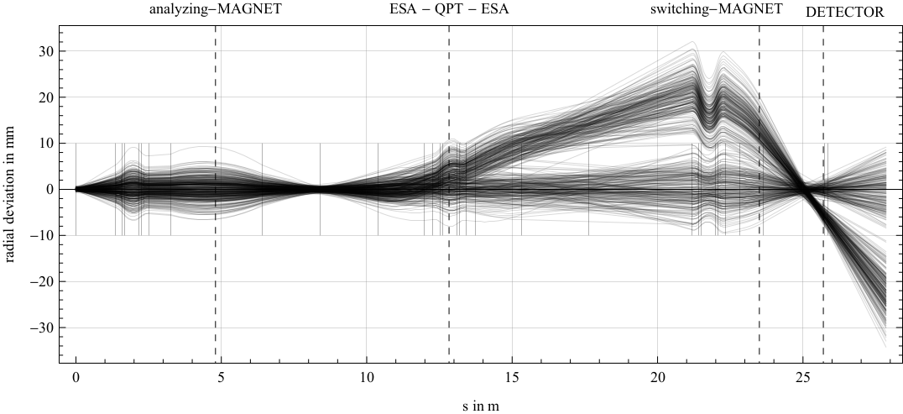
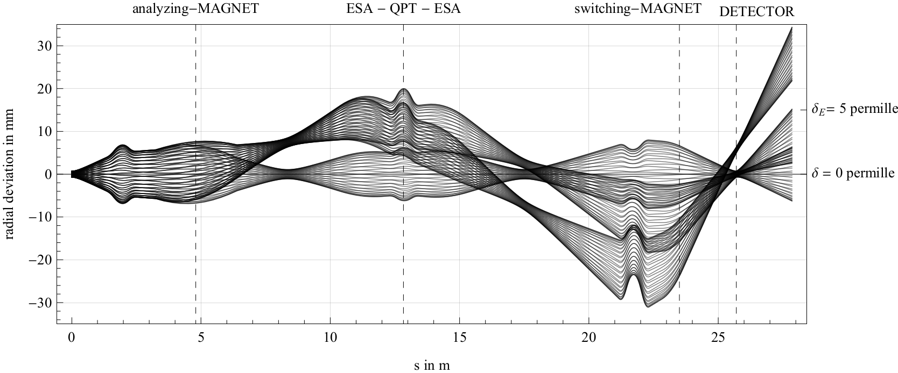

--> automatic optimization example
Installation
See: https://github.com/alexander-stolz/limiopticLicence
The software LIMIOPTIC maintained by Alexander Stolz is freely available and distributable. However, if you use it for some work whose results are made public, then you have to reference it properly.
Documentation
Before any ion optical element is added to the beamline, one or more particles must be defined. An easy method to create a bunch of particles is to use the function Beam().
# Beam(xmax, amax, ymax, bmax, dk, dm, num=250, x=0, y=0)
Beam(
xmax = 4,
amax = 15,
ymax = 4,
bmax = 15,
dk = 0,
dm = 0)
HELP: ------------------------------------------ Beam(xmax, amax, ymax, bmax, dk, dm, num=250, x=0, y=0) produces a simple beam for fast calculations. xmax = maximal radial deviation [mm] amax = maximal radial angle [mrad] ymax = maximal axial deviation [mm] bmax = maximal axial angle [mrad] dk = relative energy deviation [permille] dm = relative mass deviation [permille] num = number of particles, x, y = radial/axial deviation ------------------------------------------Also variables can be defined and used as arguments. The special variables INPUT[0], INPUT[1], etc. correspond to the values of the sliders in the input window. To see this window, the plotting has to be initiated with Ctrl + F.
relative_energy_deviation = 10. # permille
relative_mass_deviation = INPUT[0] # value of first slider
Beam(
xmax = 4,
amax = 15,
ymax = 4,
bmax = 15,
dk = relative_energy_deviation,
dm = relative_mass_deviation)
# Fancy beamline containing a drift of 2 m,
# then a lens with a focus of 1 m,
# and then another drift.
# Also a label is added to the lens.
Beam(4, 15, 4, 15, 0, 0)
Drift(2)
Name("einzel lens")
EinzelLens(1)
Drift(2)# Fancy beamline containing a drift of 2 m,
# then a lens with a focus of 1 m,
# and then another drift.
# Also a label is added to the lens.
Beam(4, 15, 4, 15, 0, 0)
Drift(2)
Name("einzel lens")
EinzelLens(INPUT[0])
Drift(1)
# Tell LIMIOPTIC that a waist should be in this position.
Waist()
# This is just for you.
Name("here should be a waist")
Drift(1)
# Now you can focus by hand with the first slider
# OR check the box left from the slider
# and click on "optimize selected parameters".
For more information about ion optic calculations see: Wollnik, Hinterberger (german) or my diploma thesis (german, below).
A list of all currently available commands will be provided soon here on this page.
A list of all currently available commands will be provided soon here on this page.
Examples
Seperation of Mn and Cr via a degrader foil in two different positions:


The CologneAMS high energy mass spectrometer:

Download
Diplomarbeit.pdf (german, ca. 13 Mb)
Updated: 16.06.2017